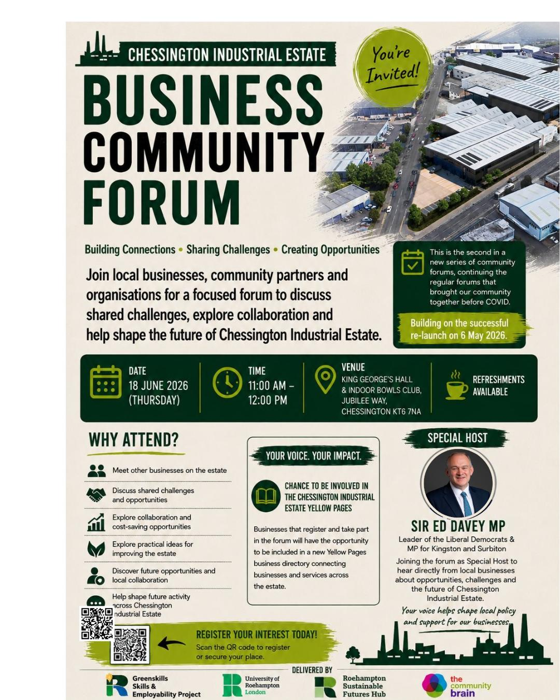

18 June 2026Events
Roehampton Research & Innovation Showcase 2026
The University of Roehampton welcomed academics, industry partners and community organisations for an afternoon of collaboration, insight and impact — with the Roehampton Sustainable Futures Hub proud to be part of the day.
Chessington Industrial Estate 1st Community Forum
Bringing together local businesses, workers, and community organisations to explore sustainability, green skills, and collaboration across the estate.
ALII — Meeting with Putney News
Professor Ayse Demir, Elliot Thorpe and the Hub team met with Kieren McCarthy of Putney News to discuss real-time air quality monitoring, key locations across Putney and the data-first approach driving the Air & Living Infrastructure Initiative.

Wandsworth Net Zero Partnership Roundtable
The University of Roehampton hosted sector leaders, innovators and students from across London's public and private sectors to explore what it takes to build a greener, more resilient city together.
View on LinkedIn
Green Skills First In-Person Visit to Chessington Industrial Estate
Our first in-person meeting with Community Brain set the foundation for the Green Skills project, focusing on material flows, SME engagement and practical sustainability action at Chessington Industrial Estate.
Kingston Hive - Research Visit & Impact Monitoring
A visit to Kingston Hive to engage in meaningful discussions, gather insights and explore practical approaches to monitoring impact and strengthening sustainable growth as part of the Hub's ongoing evaluation partnership.
Air Monitoring Collaboration with Putney Action Group
In collaboration with Putney Action Group, the Hub explored the use of air monitoring devices across urban settings, including school environments and riverside homes — building pathways toward healthier, more sustainable neighbourhoods.
ALII — Second Project Meeting with A Greener London
A second meeting between Professor Ayse Demir, her research team and Elliot Thorpe, Director of A Greener London, strengthening collaboration and advancing shared goals for the Air & Living Infrastructure Initiative.
Kingston Hive AGM - University of Roehampton Research Team
The University of Roehampton Research Team attended the Kingston Hive AGM, strengthening the collaborative partnership and shared commitment to evidencing community-led impact.
Green Skills for South London - First Meeting with The Community Brain
Our first formal meeting with The Community Brain, setting the foundations for the Green Skills for South London project and establishing the partnership that would drive its community-led delivery.
ALII Inaugural Project Meeting — Roehampton University & A Greener London
Our first official project meeting brought together Roehampton University and A Greener London to formally launch the Air & Living Infrastructure Initiative, aligning on research goals, implementation plans and community impact.